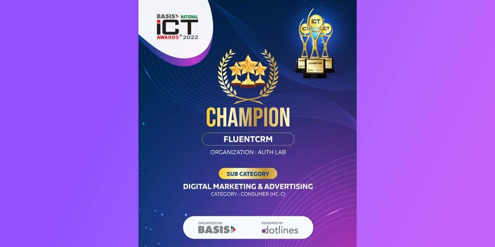
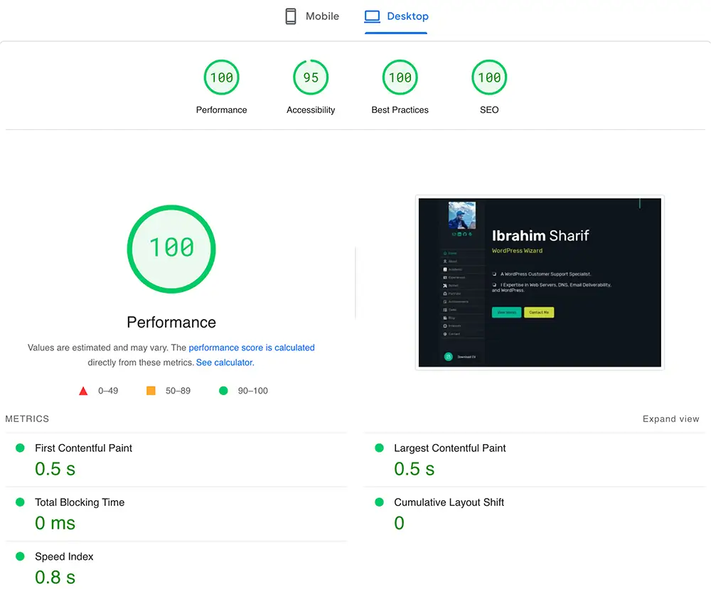

Academic
Academic Achievements
Achievements Skillset
Skillset Blog
BlogIbrahim Sharif
❏ A WordPress Customer Support Specialist.
❏ I also have Expertise in Web Servers and Email Deliverability.
About Me.
Hi, my name is Ibrahim Sharif! My WordPress journey began over a decade ago with a Softaculous install on cPanel. Since then, I’ve built a career helping businesses grow with WordPress, from fixing performance and email deliverability issues to leading support at FluentCRM and FluentSMTP.
With a Bachelor's degree in Computer Science and Engineering, I’ve developed a strong foundation in IT support, server management, and customer success. I’m passionate about using my skills to help people solve problems and achieve their goals with WordPress.
I’ve solved thousands of customer cases, optimized servers, mentored support teams, and even contributed to WordPress core. Lately, I’ve been diving deeper into data reporting, automation, and building smoother support tools for plugin-based businesses.
Outside of work, I enjoy trekking in the Himalayas and exploring new tech. I love sharing what I learn—whether through writing, mentoring, or collaborating with the WordPress community.
You can explore my work experiences and learn more about my journey here.
Academic.
B.Sc. in Computer Science & Engineering
Metropolitan University, Sylhet (2014 - 2018)
Thesis: Implementation of a Web Server on an Android Device in a Home Network
Objective: Running and benchmarking the performance of WordPress websites, static HTML sites, and PHP script websites backed by NGINX, Apache, MySQL, and PHP stack from home, serving global traffic.
GitHub 
Implementation of Web Server in Amazon Web Services (EC2)
- Building a Live Web Server from Scratch using RHEL/CentOS 7.
- Installations of the Latest Apache, Varnish, NGINX, MySQL, PHPMyAdmin, BIND DNS, PHP[CGI/FCGI], etc.
Webserver with Virtualization in a Home Network with Email Delivery
- Using virtualization in a personal computer, I implemented a Real Live Server in a Home Network.
- Developed a failover and effective Email Infrastructure for all types of emails(in & out).
Light Following Solar Tracker using Arduino Microcontroller
- Multiple LDRs were positioned to sense light intensity from different directions towards the light source.
- Increased solar panel efficiency by up to 30%-40% compared to stationary systems.
A Timeline for the History of Computer Technologies
- Used Laravel's Eloquent ORM to store and manage timeline events (e.g., key milestones in computer technology) in a database with attributes like year, title, description, and category.
Experiences.
My notable experiences and professional journey.
Here you'll find highlights from my professional journey—roles, projects, and collaborations that have shaped my expertise. My experience spans working with diverse companies and tackling a wide range of challenges, each contributing to my growth in the tech industry. I’m always driven by curiosity and a passion for learning, seeking out new opportunities to expand my skills and make a meaningful impact.
Product Support Lead
WPManageNinja LLC (2022 — Present)
Product Support Lead at WPManageNinja LLC, managing FluentCRM and FluentSMTP. With 3 years of experience, I’ve handled 5,000+ support tickets and 12,000+ responses, troubleshooting complex issues and delivering tailored solutions. In 2024, FluentCRM (50,000+ active installs, 976,000+ downloads) earned 35+ 5-star reviews, while FluentSMTP (300,000+ active installs, 2.59M+ downloads) received 80+ 5-star reviews.
Guest Support
xCloud by Startise ( 2024 )
In addition to my primary role at WPManageNinja, I worked as a guest support agent for xCloud, particularly during their launch events and LTD (Lifetime Deal) promotions. My primary responsibility was handling live chat support, assisting users with various server-related and WordPress issues in real time.
Customer Support & Troubleshooting
WordPress, IT Support, etc. (2016 - Present)
My journey in Customer Support began in 2016 when I started offering freelance services on Upwork and Fiverr. Most of the time, I worked on fixing issues with WordPress and Servers.
In the last 3 years, my professional support experience has grown significantly while working at WPManageNinja, where I primarily handle FluentCRM, FluentSMTP, and Fluent Forms. I’ve assisted thousands of customers, resolving complex issues related to email deliverability, automation workflows, and plugin integrations. My expertise extends to debugging server-related problems, diagnosing conflicts between plugins, and optimizing WordPress performance for high-traffic websites.
Additionally, I’ve been actively involved in contributing a lot to help users troubleshoot issues and improve their WordPress experience through ticket-based support, live chat, or public forums like WordPress.org.
Remote Job
Brands Outlet, Qatar (2019 - 2020)
Remotely worked part-time as a System Administrator, managing company websites and developing e-commerce solutions on WooCommerce and Shopify.
Technical Documentation & Tutorials
FluentCRM, FluentSMTP, Blog (2022 - Present)
I’ve authored and maintained extensive technical documentation for FluentCRM and FluentSMTP. I revamped their documentation structure, adding about 100 well-organized articles covering setup guides, troubleshooting tips, and advanced use cases.
Beyond written documentation, I’ve also created video tutorials to simplify complex workflows and demonstrate real-world use cases. Some of these videos were published on YouTube (youtube.com/mribrahimsharif) to provide additional support to users.
Freelancing
Upwork, Fiverr (2016 — 2022)
Part-time freelancer specializing in IT Support, including Server, Email, and Hosting troubleshooting, migrations, and configurations. Experienced in WordPress customization, performance optimization, and WooCommerce setup. Additionally, worked with various hosting environments and platforms like Magento, Shopify, and Laravel.
Email Systems and Deliverability
Freelance
My understanding of email protocols, authentication mechanisms, and deliverability best practices allows me to troubleshoot and resolve email-related issues effectively. I have worked with Port25’s PowerMTA, which is now known as Sparkpost, allowing me to get hands-on experience with Email Delivery Servers and Infrastructures at scale also used by Mailchimp, Microsoft, and other major ESPs. I handled about 30 million Email deliveries per day for a project in 2016.
Network Expertise
Personal Interest
Driven by a deep interest in servers and email systems, I have extensively explored and experimented with networking technologies, including Cisco devices, MikroTik routers, and various home networking solutions.
Additionally, I hold a MikroTik Certified Network Associate (MTCNA) certification, which validates my proficiency in MikroTik RouterOS and advanced networking concepts. To verify certification details: MikroTik certificate Search with ID: 2002NA2430
Achievements.
Highlights of my professional journey.
Recognitions and milestones that showcase my dedication, impact, and growth in the WordPress and tech community.



A few achievements for the WordPress Plugins I work on.
- Awarded as The Outstanding Support Contributor of 2023.
- FluentCRM was the champion of Plugin Madness, 2021.
- FluentSMTP received "Gold" award from the WP Awards!
- FluentCRM was selected as the Champion by BASIS in 2022.
Testimonials.
Please read what real WordPress customers say about me and my team.
Their feedback reflects our dedication to excellence and the positive impact we've made on their WordPress journey. Discover how our responsive support and tailored solutions have empowered clients to overcome challenges and achieve success with their projects.
I am proud to mention that I am the Product Support Lead of this amazing team!
I love getting my support replies from Fluent, they always include the help I need plus a little more in the form of options or context. AND screenshots and when it’s really challenging video explanations! Thank you Fluent!
@adcoll
The FluentCRM plugin meets my needs at an affordable price. Previously, I used CRMs that either had all the features I required but were very expensive, or offered limited functionality—such as email marketing—at a manageable cost ...
@alejandrotrefois
After testing several email marketing and CRM plugins for WordPress I came to the conclusion that FluentCRM is the best option. Complete and very easy to use. And when I needed support I was surprised by the level of attention and interest in helping ...
@steliocristovao
I have not actually started using FluentCRM yet, we are just in the discovery phase. But Fluent’s support has been great, they have gotten back to me 3 times today with all the relevant information – relevant answers, polite and courteous, in a ...
@manm0untain
Today, I created a support ticket because I needed help with migrating all Fluent customer data to a different website (including WooCommerce info like lifetime value) without having to export all orders from WooCommerce. The standard export/import ...
@sprachlos
I am thrilled with the product fluentCRM. It can do everything you want in the field of WordPress automations. I set up a newsletter, as a non-technical person I could achieve that! What I like best is the outstanding support – you talk to real people! ...
@millionhope
I am happy to express my satisfaction with the Fluent CRM plug-in (and the other tools from that team): But I what I like the best is the superior support experience I have had with the team. The support team’s responses were very fast, even on weekends ...
@joeweb2014
Skillset.
Some key technologies that I am good with.
I don’t claim to be a master of everything, but I have strong hands-on experience with the following technologies. I’m always eager to learn, adapt quickly to new tools, and continuously improve my skill set to stay ahead in the ever-evolving tech landscape.
WordPress Wizardry
Get services from Development to Security, Bug Fixing, Customization, Cloning, Migration, etc.
Learn MoreSystem Administration
Streamlined Linux Server Administration for peak performance, security, and reliability.
Learn MoreDNS, Email, and SMTP
Expert solutions for DNS issues (such as SPF, DKIM, DMARC), Email Deliverability and SMTP Servers.
Learn MoreWordPress

Woo
HTML, CSS

PHP

JavaScript
Python

cPanel
GitHub

Magento
Shopify
MySQL
MariaDB
GCP
AWS
PowerMTA
Postal
Mikrotik
Office365

Ubuntu
CentOS

MailWizz

Plesk
Sendy
Android

Cloudflare
* The ratings are personal and based on the specific features commonly used by businesses from the respective technologies.

Tasks.
Helping Businesses and Individuals Achieve Their Goals
My vision is to be a trailblazing force in the world of web design, development, and deployment—recognized for unwavering commitment to excellence, integrity, and customer satisfaction. I strive to empower businesses and individuals by delivering innovative, reliable, and user-centric digital solutions that drive real results and lasting impact.
WordPress
Need help with WordPress? I’ll quickly fix any bugs to keep your site running smoothly and error-free.
| 1 | I expertly resolve any WordPress or WooCommerce theme, plugin, email, hosting, PHP, CSS, SSL, or JS issue. | Troubleshooting |
|---|---|---|
| 2 | I customize WordPress and WooCommerce themes, designs, and plugins to meet your needs with precision. | Customization |
| 3 | I automate WordPress and WooCommerce using FluentCRM, WP Fusion, Automator, webhooks, or custom code as an expert. | Automation |
| 4 | I handle migrations and cloning for WordPress, WooCommerce, servers, emails, or domains with proven expertise. | Migration |
| 1 | I expertly resolve all WordPress email and SMTP issues for reliable delivery. | WordPress SMTP |
|---|---|---|
| 2 | I configure DNS, SPF, DKIM, DMARC, and BIMI as an email deliverability expert. | Email DNS |
| 3 | I deploy and manage PowerMTA servers for high-volume bulk email campaigns. | Bulk Campaign |
| 4 | I set up and optimize Mailwizz, Acelle, Sendy, and Mautic for seamless email marketing. | EMA |
| 5 | I configure Google Workspace, Office365, AWS SES, Mailchimp, and self-hosted email systems with expert precision. | Email Services |
Email Deliverability
Improve email delivery on your WordPress site with my reliable and secure SMTP service.
Blog.
Personal Blog Posts
As a WordPress techie and passionate explorer, I enjoy sharing my knowledge and real-world experiences with the community. Dive into my blog posts to discover insights, lessons learned, and behind-the-scenes stories from my journey in WordPress, tech, and beyond. Whether you're a developer, site owner, or fellow enthusiast, you'll find practical tips and inspiration for your own path.

A Product Support Lead's Journey: From Solo Hero to Team Leader
A story of transitioning from a solo support agent to leading a team, with a deep dive into solving a complex WordPress bug that tested...

Automate WordPress Cron Monitoring with Telefy: A Server-Side Guide
Telefy stands out as a modern, developer-friendly solution for real-time notifications and monitoring. Unlike traditional email alerts or complex integrations...

Transition Towards Multi-Tier and Multi-Shift WordPress Support
How I influenced and became a part to transform our WordPress support team from flat structure to tiered multi-shift system, leading organizational change...

A Team Win That Taught Me an Important Job as a Leader
A personal story about our support team's first big test during a Black Friday weekend, and how their success taught me that leadership is about...

How I Balanced Empathy and Efficiency During Peak Hours
A behind-the-scenes look at managing WordPress support during high-pressure moments, blending empathy and efficiency...

Controlled Chaos: Handling a Release-Day Crisis Without Losing My Mind
Imagine a city’s fire brigade. Most days are routine, but when a major fire breaks out, every member knows their role, trusts the process...
Interests.
My personal interests outside job for living.
❏ Trekking & Hiking
I love to travel and explore new places, especially in the mountains. My trekking adventures have taken me across India and Nepal, where I’ve hiked iconic trails in the Himalayas such as Kedarkantha, Annapurna Base Camp, Machapuchare Base Camp, and the breathtaking Kashmir Great Lakes. Each journey has offered unforgettable views, cultural encounters, and a deep sense of accomplishment. Trekking not only fuels my passion for adventure but also inspires resilience and mindfulness in my daily life.
Action speaks louder than words!
If you reached this far, you’ve experienced a site that’s more than just text and static images—it’s smooth, interactive, and lightning fast! Below is my Google PageSpeed Insights score: 100% for desktop and 97% for mobile. 🚀
View on Google PageSpeed Insights 
Optimized with lazy loading, minified assets, and best practices for Core Web Vitals. Try resizing, scrolling, or switching devices—the experience stays seamless!
